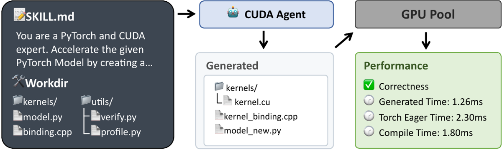
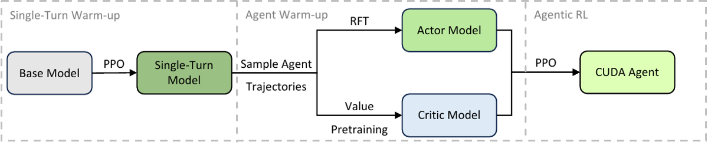
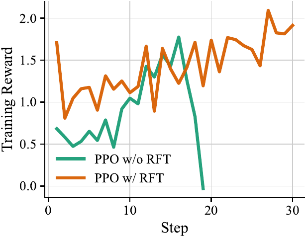

TL;DR — Pile RL agentique complète (synthèse de données → env skill-augmented avec sandbox GPU dédié → PPO avec double warm-up actor+critic) qui transforme un MoE 230B en spécialiste CUDA battant torch.compile sur quasi tout KernelBench.
Claim principal (abstract, §1) : les auteurs affirment atteindre 100 %, 100 % et 92 % de faster rate vs torch.compile sur KernelBench Level-1/2/3, et dépasser Claude Opus 4.5 et Gemini 3 Pro d'environ 40 points sur Level-3.
⚠️ Le chiffre de l'abstract ne correspond pas au tableau principal. [Tab. 1] donne, faster rate vs Compile : Level-1 97,0 %, Level-2 100,0 %, Level-3 90,0 % — pas 100/100/92. Vérifié dans full.tex ET dans paper.pdf (extraction texte) : l'incohérence est dans le papier, pas dans la source aplatie. La figure de tête (benchmark chart, non légendée, §1) affiche bien 90,0 pour Level-3. Le « ~40 % » tient en revanche : 90,0 − 50,0 (Opus 4.5) = 40 points, 90,0 − 52,0 (Gemini 3 Pro) = 38 points [Tab. 1].
Claims secondaires, plus intéressants pour nous : 1. un reward milestone discret normalisé bat un reward speedup continu (96,8 % vs 60,4 % de faster rate vs Compile, overall) [Tab. 2, §4.3.2] ; 2. sans warm-up actor (RFT) ou critic (value pretraining), l'entraînement collapse — 17 steps stables seulement dans l'essai initial [§3.3].
Origine des tâches — 100 % automatique, aucun humain dans la boucle. Deux sources [§3.1] :
- seed crawling : opérateurs de référence implémentés en PyTorch, minés dans les libs torch et transformers. Chaque opérateur = classe Python (torch.nn.Module) avec __init__ et forward [App. A]. Les auteurs excluent explicitement les repos maintenus individuellement, « qui manquent de qualité de code » ;
- synthèse combinatoire : un LLM est prompté pour échantillonner ≤ 5 classes d'opérateurs de torch, empilées séquentiellement en une seule couche de calcul. Les opérateurs transformers ne sont pas composés (déjà des modules de haut niveau encapsulant plusieurs primitives).
⚠️ Quel LLM fait la synthèse : non précisé. Le prompt de synthèse : non précisé (absent des annexes — seul le SKILL.md de l'agent est recopié, App. B.2).
Justification du design combinatoire [§3.1] : les auteurs argumentent que fusionner k opérateurs n'est pas équivalent à optimiser chacun isolément puis chaîner — la fusion évite la matérialisation en mémoire globale des intermédiaires, couple les étages via des contraintes partagées registres/SMEM/occupancy, et impose un mapping parallèle et un layout unifiés. C'est le cœur de l'argument « le problème composé est un nouveau problème ».
Pipeline de construction :
1. crawl torch + transformers → banque de primitives ;
2. synthèse LLM combinatoire (≤ 5 ops) ;
3. filtrage rubric-based par exécution, 4 critères [§3.1] :
- (1) l'opérateur doit s'exécuter avec succès en mode Eager ET Compile ;
- (2) exclusion des opérateurs à stochasticité intrinsèque (reproductibilité → déterminisme du vérifieur) ;
- (3) anti-hacking : on vérifie que les sorties pour des inputs différents ne sont ni constantes ni numériquement indistinguables (sinon un kernel trivial passerait le test de correction) ;
- (4) fenêtre de charge : temps d'exécution eager contraint dans [1 ms, 100 ms] — élimine le trivial et le trop lourd ;
4. décontamination : exclusion des opérateurs trop similaires aux cas de test KernelBench.
⚠️ Le critère (3) est le plus transférable conceptuellement : c'est un filtre sur la dégénérescence du signal de vérification, pas sur la difficulté. Rare et bien vu.
Volume — 6 000 samples après filtrage → CUDA-Agent-Ops-6K [§3.1]. Les volumes avant filtrage (nb d'opérateurs crawlés, nb de compositions générées, taux de rejet à chaque étape) : non précisés. ⚠️ C'est une lacune : on ne sait pas si 6 000 est le résidu de 10 000 ou de 500 000, donc on ne peut pas juger la sévérité du filtre.
Distribution de difficulté — proxy unique = profondeur de composition [Tab. 3, App. A] :
| Catégorie | Proportion |
|---|---|
torch ops × 1 |
3,40 % |
torch ops × 2 |
83,77 % |
torch ops × 3 |
7,62 % |
torch ops × 4 |
2,80 % |
torch ops × 5 |
1,23 % |
opérateur transformers |
1,18 % |
⚠️ Les auteurs décrivent cette distribution comme « un équilibre délibéré entre opérateurs simples, compositions modérées et modules de haut niveau » [App. A]. C'est un écart au réel : 83,77 % du dataset est à profondeur 2, les profondeurs 4-5 pèsent 4 %. Ce n'est pas un équilibre délibéré, c'est la queue d'une distribution combinatoire. Et c'est probablement pourquoi Level-3 de KernelBench (blocs NN complets) reste le plus faible.
Filtrage par pass@k du modèle de base — aucun. Pas de filtrage par difficulté-modèle, seulement par exécution/temps. Contraste net avec la pratique dominante en RLVR math/code.
Curriculum — §1 annonce « generates training problems spanning a wide range of difficulty levels, enabling effective curriculum-based RL training ». ⚠️ Aucun mécanisme de curriculum n'est décrit nulle part dans le papier : pas d'ordonnancement, pas de mélange évolutif, pas de rééchantillonnage en cours d'entraînement, pas de filtrage dynamique. Le « curriculum » se réduit à la présence de plusieurs niveaux de difficulté dans le pool. Claim non étayé.
Contamination / séparation train-test [App. A] — sérieux et explicite, c'est un point fort :
- outil de similarité de code basé AST (PythonASTSimilarity, « off-the-shelf »), appliqué sur la classe Model extraite de chaque programme ;
- similarité par paires train × eval ; suppression de tout sample dont la similarité max à un programme d'éval dépasse 0,9 ;
- la distribution des similarités max est donnée [Fig. « max_sim », App. A] ; après filtrage, aucun sample ne dépasse le seuil.
- Les auteurs utilisent cette rigueur comme arme contre les concurrents : Kevin partitionne KernelBench en train/eval, CUDA-L1 construit son SFT depuis les références KernelBench puis fait du RL sur les mêmes tâches → « significant data leakage », résultats non comparables [App. C]. ConCuR hérite de la fuite via Kevin-32B.
Données SFT/IFT avant RL — il y en a, mais pas de SFT humain. Chaîne [§3.3, Fig. « training stages »] :
Base model → RL single-turn (PPO) → Single-Turn Model → échantillonnage de trajectoires agentiques → (a) RFT → actor init ; (b) Value Pretraining → critic init → RL agentique (PPO) → CUDA Agent.
Rôle de la RFT : cold start / prior comportemental, pas apprentissage de connaissance (cf. §4).
Rubriques de rejection sampling [§3.3] :
- (1) outcome filtering : on ne garde que les trajectoires à reward positif (R > 0) ;
- (2) pattern filtering : rejet des trajectoires à comportements inefficaces ou invalides — « redundant multi-turn loops » ou « hallucinations qui violent le schéma d'appel d'outil prédéfini ».
Objectif RFT = NLL standard sur les trajectoires filtrées (SFT).
⚠️ Volume de trajectoires RFT, nb de prompts, nb de rollouts par prompt, taux d'acceptation du rejection sampling, nb d'epochs, LR de la RFT : tous non précisés. C'est le trou le plus gênant du papier pour quiconque veut répliquer, puisque la RFT est l'ingrédient sans lequel tout collapse.
Coût humain — aucun rapporté. Pipeline entièrement automatisé (crawl + LLM + exécution). Pas d'annotation, pas d'expert. C'est exactement ce que permet un domaine à vérifieur exact.
Cadre général [§3.2] — les auteurs alignent délibérément leur agent loop sur OpenHands (wang2024openhands) « pour garantir la généralisabilité », et suivent le paradigme ReAct (yao2022react) : reasoning → action → observation, en boucle.
Observation — ce que voit le modèle à chaque tour : sortie des outils (stdout/stderr shell, contenu de fichiers, résultats de grep/glob), donc en pratique : erreurs de compilation nvcc, résultat de la vérification numérique, sortie du profiler. La figure de l'agent loop montre le retour du GPU Pool sous forme structurée : Correctness ✅, Generated Time: 1.26ms, Torch Eager Time: 2.30ms, Compile Time: 1.80ms [Fig. « agent loop », §3.2].
⚠️ Le format exact de l'observation, le template de prompt système et le format des messages d'outil ne sont pas recopiés (seul le SKILL.md l'est).
Espace d'actions / outils [App. B.1] — liste complète donnée, mais uniquement en prose : aucune signature, aucun schéma JSON n'est fourni. Les auteurs décrivent ces outils comme « les seuls mécanismes par lesquels l'agent peut interagir avec le système et le monde extérieur ».
| Outil | Description (App. B.1, recopiée en substance) |
|---|---|
Bash |
commandes shell en session persistante, sous contraintes de sûreté strictes (règles de quoting, validation de répertoire). Permet compilation, gestion de dépendances, exécution |
Read / Write |
accès lecture seule / écriture aux fichiers locaux ; écriture protégée par une politique read-before-write (interdit l'écrasement à l'aveugle) |
Edit / MultiEdit |
modifications déterministes au niveau chaîne ; Edit = remplacement unique, MultiEdit = plusieurs édits atomiques dans un fichier |
Glob |
découverte de fichiers par patterns (**/*.py) |
Grep |
recherche de code basée ripgrep : regex, filtrage par type de fichier, récupération de lignes de contexte |
NotebookEdit |
modification structurée de cellules Jupyter |
BashOutput |
streaming incrémental des sorties de process shell en arrière-plan (monitoring de jobs longs : compilation, etc.) |
KillBash |
terminaison de sessions shell en arrière-plan (jobs bloqués, récupération de ressources) |
⚠️ Incohérence : §3.2 annonce « BashTool, GlobTool, MultiEditTool, et TodoWriteTool » ; TodoWriteTool n'apparaît pas dans la liste complète de l'App. B.1, et Read/Write/Grep/NotebookEdit/BashOutput/KillBash n'apparaissent pas en §3.2. Le statut du tool de planification (TodoWrite) est donc ambigu.
Point notable : aucun outil de recherche web ni de retrieval externe — c'est une décision explicite anti-hacking, cf. §3.
La « CUDA Coding Skill » — c'est l'apport de design le plus réutilisable. Les auteurs s'inspirent des Agent Skills (anthropic2025equipping) et sortent les instructions et outils spécifiques CUDA du prompt système pour les mettre en format Skill : un SKILL.md + des scripts (profile.py, verify.py, compile.sh) [§3.2, Fig. « agent loop »]. Le SKILL.md formalise le workflow standard d'un expert en 4 étapes [§3.2] :
1. profiler l'implémentation PyTorch native via profile.py → identifier les bottlenecks (lancements de kernels excessifs, patterns d'accès mémoire sous-optimaux) ;
2. implémenter les opérateurs CUDA custom en réécrivant model_new.py + les .cu et le binding, en ciblant les opérateurs critiques identifiés à l'étape 1 ;
3. compiler et évaluer dans le sandbox GPU, raffiner itérativement jusqu'à correction numérique et performance ;
4. répéter depuis l'étape 2 jusqu'à ≥ 5 % de speedup sur torch.compile en passant tous les checks de correction.
Le SKILL.md intégral est recopié [App. B.2] — ~180 lignes. Structure : 1. CRITICAL RESTRICTIONS / 2. WORKSPACE STRUCTURE / 3. UNIFIED WORKFLOW (implémentation avec templates de code .cu et _binding.cpp complets, compile & test, stratégie d'optimisation par priorité, parameter tuning, itération, cleanup final) / 4. TOOL SCRIPTS REFERENCE / 5. OPTIMIZATION CHECKLIST / 6. COMMON ISSUES AND SOLUTIONS (tables erreur→solution) / 7. SUCCESS CRITERIA / 8. KEY REMINDERS.
Extraits load-bearing :
### STRICTLY FORBIDDEN
- **NO torch operators in C++**: NEVER use `torch::*` or `torch::nn::functional::*` in binding.cpp or .cu files
- **NO torch operations in model_new.py**: Only tensor creation and your custom ops allowed
- **NO third-party libraries**: Except cuBLAS (GEMM only) and cuDNN (Conv only)
- **NO modifications to utils/ directory**
- **NO modifications to binding.cpp or binding_registry.h**: These are fixed infrastructure
## 7. SUCCESS CRITERIA
- **MINIMUM REQUIREMENT**: At least 5% faster than torch.compile (<= 0.95× baseline time)
- **TARGET**: Achieve the best possible performance - every microsecond counts!
- **Correctness**: Test must pass (atol=1e-2, rtol=1e-2)
- **Clean Final Code**: kernels/ directory contains ONLY final optimized version
Le SKILL.md encode aussi une hiérarchie d'optimisation par impact attendu [App. B.2, §3.1 du skill] — Priority 1 Algorithmique (>50 % d'impact : fusion, tiling SMEM, coalescing) ; Priority 2 Utilisation hardware (20-50 % : loads vectorisés float2/float4, primitives warp __shfl_sync/__ballot_sync, tuning d'occupancy) ; Priority 3 Fine-tuning (<20 % : ILP, précision mixte FP16/TF32, prefetching, double buffering). Plus une stratégie d'itération explicite : « First 1-2 iterations: Achieve the minimum 5% improvement / Next 3-5 iterations: Push for maximum possible speedup ».
Workspace (structure fixe imposée à chaque tâche) [App. B.2] :
binding_registry.h # Do NOT modify - registration system
binding.cpp # Do NOT modify - main module binding
kernels/ # YOUR WORK: Implement all kernels here
utils/ # DO NOT modify - Compilation, verification and profiling tools
model.py # DO NOT modify - Original PyTorch model
model_new.py # YOUR WORK: Your optimized model using custom ops.
⚠️ Les tâches KernelBench, originellement mono-fichier, sont adaptées à cet environnement multi-fichiers pour l'éval [§4.1] — les baselines propriétaires sont évaluées sous le même agent loop, donc la comparaison reste interne-cohérente, mais les chiffres ne sont pas comparables à ceux publiés ailleurs sur KernelBench.
Single/multi-turn & horizon [§4.1] : - multi-turn, max 150 tours en rollout d'entraînement, relâché à 200 tours en évaluation ; - contexte 32 768 tokens pour le RL single-turn, 131 072 (128k) pour le RL agentique ; - horizon typique (nb moyen de tours effectifs) : non précisé ; - gestion du contexte long : non précisée. Aucune troncature, résumé ou mémoire décrits. À 200 tours de compilation CUDA dans 128k, c'est une question ouverte — probablement traitée côté implémentation mais non documentée.
Exécution — architecture sandbox [§4.1]. Design découplé CPU/GPU, c'est le point d'infra le plus précis du papier :
- un sandbox terminal Docker gère les tâches CPU-centriques (compilation des kernels) ;
- l'agent utilise les scripts skill prédéfinis pour dispatcher les jobs de vérification et de profiling vers un pool GPU dédié — 128 NVIDIA H20 (chiffre vérifié dans le texte, §4.1) ;
- isolation au niveau process + allocation exclusive des ressources → élimine les interférences inter-process, « garantit des mesures de latence stables et une capacité HBM garantie ».
- Compilation ciblée Hopper : TORCH_CUDA_ARCH_LIST=9.0 [App. B.2] ; le case study mentionne « Tensor Cores on Hopper GPUs » [App. D, case 3] — cohérent avec H20 (sm_90).
Déterminisme — obtenu par construction, à trois niveaux : 1. filtre data (2) : exclusion des opérateurs stochastiques [§3.1] ; 2. allocation GPU exclusive : pas de bruit de voisinage [§4.1] ; 3. protocole de mesure : « proper device synchronization, warm-up iterations, and repeated measurements with averaging » [§3.2, anti-hacking #4] — donc le problème du cache froid/chaud et du bruit de mesure est traité explicitement. Nb d'itérations de warm-up et de répétitions : non précisé.
Reset — non précisé (chaque tâche part d'un workspace propre, implicite via la structure fixe, mais la politique de reset inter-épisode n'est pas décrite). Timeouts — non précisés (ni compilation, ni exécution GPU, ni tour d'agent). ⚠️ Lacune réelle : un kernel CUDA en boucle infinie bloque un H20 ; il y a forcément un timeout, il n'est pas documenté.
Gestion des erreurs d'outils et des sorties mal formées — pas de mécanisme décrit au niveau env. Deux indices indirects :
- les erreurs de compilation / échecs runtime / feedback profiler sont rendus à l'agent comme observations et c'est présenté comme le cœur de la valeur de l'agent loop [§4.3.1] ;
- les « hallucinations qui violent le schéma d'appel d'outil prédéfini » existent et sont filtrées a posteriori au stade RFT [§3.3] — ce qui signifie qu'à l'exécution elles sont tolérées, pas bloquées ni pénalisées par le reward.
- Write est protégé par une politique read-before-write ; Bash par des règles de quoting et validation de répertoire [App. B.1].
Exemple de trajectoire — ⚠️ le papier ne recopie aucune trajectoire d'agent, même tronquée. L'App. D (Case Study) donne trois cas (Level-1/2/3) mais uniquement sous forme de captures du code final (modèle de référence, kernel .cu, model_new.py) et d'une analyse narrative des optimisations trouvées. Pas de séquence thought/action/observation. C'est la lacune la plus regrettable pour un lecteur qui veut concevoir un harness.
Type — exécution + mesure de performance, entièrement programmatique. Deux composantes : (a) vérification de correction numérique, (b) profiling de latence contre deux baselines. Aucun LLM-as-judge, aucun reward model, aucune rubrique textuelle.
Formule exacte [§3.2, « Robust Reward Scheduling »] — reward discret à 4 niveaux, r ∈ {−1, 1, 2, 3} :
⎧ −1 si le check de correction échoue
⎪ 3 si b(t, t_eager) ∧ b(t, t_compile)
r = ⎨ 2 si b(t, t_eager)
⎪ 1 sinon
⎩
avec b(t, t₀) = 𝟙[ (t₀ − t) / t₀ > 5 % ]
où t = runtime du kernel généré, t_eager (noté t_native dans le texte en prose, ⚠️ incohérence de notation) et t_compile = runtimes de PyTorch eager et de torch.compile.
Lecture en cascade : −1 = incorrect · 1 = correct mais pas 5 % plus rapide qu'eager · 2 = ≥ 5 % plus rapide qu'eager mais pas que compile · 3 = ≥ 5 % plus rapide que les deux.
Le seuil de 5 % est le même que celui imposé dans le SKILL.md (« MINIMUM: Must be at least 5% faster than torch.compile », « <= 0.95× baseline time ») [App. B.2] — l'instruction et le reward sont alignés, ce qui est un bon design mais rend l'ablation « reward » partiellement confondue avec l'instruction (cf. §7).
Motivation explicite [§3.2] : les approches existantes (Kevin, CUDA-L1, anonymous2026mastering) utilisent le speedup brut comme reward ; les auteurs observent que cela « souffre des outliers et d'un biais vers les kernels faciles », parce que les opérateurs varient énormément en difficulté d'optimisation, ce qui fait du speedup brut « un proxy peu fiable de la qualité du code ». D'où un schéma normalisé et robuste qui optimise conjointement correction et latence.
⚠️ Mon analyse : c'est un reward par milestones à plafond borné. L'effet mécanique est d'empêcher qu'un seul kernel à 73× de speedup (le cas 1 de l'App. D atteint littéralement 73,31× vs Compile !) domine le gradient de tout le batch. Sur un groupe de rollouts, un reward continu non borné a une variance d'advantage dictée par 2-3 problèmes triviaux-mais-spectaculaires. La discrétisation est donc d'abord un contrôle de variance, pas une question de « shaping ». Les auteurs le formulent comme « assigner du crédit à des cibles de performance claires plutôt que régresser directement sur des ratios de runtime bruités » [§4.3.2] — même idée.
Granularité — outcome uniquement. Crédit partiel via les 4 paliers (ce n'est pas binaire), mais aucun reward de process : §3.3 précise explicitement que le reward est attribué au dernier token (r_t = 0 pour t < T−1, r_{T−1} = r). Pas de reward par tour, pas de reward intermédiaire sur la compilation réussie. L'attribution de crédit intra-trajectoire est intégralement portée par le critic — d'où la criticité du Value Pretraining (cf. §4).
⚠️ Sur quel kernel le reward d'entraînement est-il calculé ? Pour l'évaluation, c'est explicite : « nous extrayons la meilleure solution de la trajectoire, celle qui maximise le speedup vs torch.compile » [§4.1]. Pour l'entraînement, non précisé — best-of-trajectory ou état final ? Ça change tout sur l'incitation à nettoyer/écraser une bonne version (et le SKILL.md ordonne de supprimer les versions intermédiaires à l'étape 5). Ambiguïté non résolue par le papier.
Vérification de correction [§3.2, anti-hacking #3] : sorties du kernel validées contre 5 inputs échantillonnés aléatoirement, « strictement selon le protocole d'évaluation de KernelBench ». Tolérance atol = 1e-2, rtol = 1e-2 [App. B.2, §7 du skill].
Termes additionnels — aucun. Pas de terme de format, pas de pénalité de longueur, pas de bonus de concision, pas de pénalité de nombre de tours dans le reward. Le contrôle de la longueur de trajectoire passe entièrement par le critic (cf. §5 : sans Value Pretraining, la longueur explose).
Fiabilité du vérifieur — mesurée ? ⚠️ Non. Aucune métrique de fiabilité n'est rapportée : pas de taux de faux positifs, pas de faux négatifs, pas d'audit humain d'un échantillon de kernels acceptés, pas de mesure de la variance des mesures de latence. Les auteurs argumentent la fiabilité par construction (isolation, sync, warm-up, moyennage) mais ne la quantifient jamais. Pour un papier dont le titre du composant central est « automated verification and profiling to provide reliable reward signals », c'est le principal manque méthodologique.
⚠️ Angle mort identifiable : 5 inputs aléatoires à atol/rtol = 1e-2 est une barre basse. Le case study le montre involontairement — le cas 3 active TF32 pour les convolutions et GEMM afin de gagner de la vitesse [App. D, case 3]. C'est une dégradation de précision légitimée par la tolérance. La frontière entre « optimisation hardware-aware » et « exploitation de la tolérance numérique » n'est jamais discutée. Idem pour les cas limites (NaN/Inf, tailles non couvertes par les 5 tirages, edge cases de bornes) : 5 tirages aléatoires ne les couvrent pas.
Si juge LLM — sans objet, il n'y en a pas. (Le seul LLM en amont est celui de la synthèse combinatoire de données, dont le prompt est non précisé.)
Robustesse / anti-hacking — le vérifieur a-t-il été attaqué ? Pas testé adversarialement, mais durci par construction. Les auteurs partent d'un précédent connu : ils citent que Sakana AI CUDA Engineer (lange2025sakanacuda) a souffert du problème de hacking (référence main_horse2025cuda). Cinq contraintes explicites [§3.2, « Efforts to Avoid Reward Hacking »] :
sudo python3 -m utils.verification du skill : l'agent lance en sudo un code qu'il ne peut pas éditer ; utils/ est marqué « DO NOT modify » dans le skill ET protégé au niveau OS — ceinture et bretelles.)torch.nn.functional, « garantissant que les gains de performance proviennent uniquement des kernels CUDA générés ». (Empêche le hack #1 évident : appeler l'op PyTorch d'origine depuis le « kernel custom ».)À quoi s'ajoutent, en amont, le filtre data anti-dégénérescence (§1 : sorties non constantes, non indistinguables) et, à la marge, le filtre pattern de la RFT.
⚠️ Ce catalogue de 5 contre-mesures est, à mon sens, le contenu le plus réutilisable du papier — c'est une taxonomie des vecteurs d'attaque sur un vérifieur par exécution : (i) modifier le vérifieur, (ii) court-circuiter la tâche vers l'oracle, (iii) sur-ajuster un test unique, (iv) fausser l'instrument de mesure, (v) importer la réponse de l'extérieur. Les cinq se transposent tels quels à tout vérifieur agentique.
Algorithme — PPO, avec critic explicite. Pas GRPO, pas RLOO, pas de variante critic-free. C'est un choix à contre-courant de la pratique 2025 dominante, et le papier le justifie a posteriori : l'attribution de crédit sur 150 tours avec un reward terminal unique ne peut pas être portée par une baseline de groupe.
Objectif clipped surrogate standard [§3.3] :
L^CLIP(θ) = E_τ [ (1/T) Σ_t min( ρ_t(θ) Â_t , clip(ρ_t(θ), 1−ε_lower, 1+ε_higher) Â_t ) ]
avec ρ_t(θ) = π_θ(a_t|s_t) / π_θ_old(a_t|s_t), a_t = token en position t.
Ce qui diffère du standard : - clipping asymétrique (clip-higher) : ε_lower = 0,2 ; ε_higher = 0,28, explicitement « following DAPO » (yu2025dapo) [§3.3]. (Qiying Yu, 2e/3e auteur ici, est l'auteur de DAPO — cohérent.) - normalisation par 1/T (moyenne par token sur la trajectoire), pas de somme. - aucun terme de pénalité KL n'apparaît dans l'objectif écrit. Le coefficient KL, le modèle de référence et son éventuelle mise à jour : non précisés. Sachant que DAPO supprime le terme KL, c'est probablement un choix délibéré (KL = 0), mais le papier ne le dit pas. - La vraie contribution algorithmique n'est pas dans l'objectif : c'est l'initialisation en deux temps de l'actor ET du critic (ci-dessous).
Hyperparamètres [§4.1, §3.3] :
| Paramètre | Valeur | Source |
|---|---|---|
| Base model | Seed1.6, MoE 23B actifs / 230B total | §4.1 |
| Batch global | 1024, égal à la mini-batch des updates PPO online | §4.1 |
| LR actor | 3 × 10⁻⁶ | §4.1 |
| LR critic | 6 × 10⁻⁶ (2× l'actor) | §4.1 |
| Clipping | ε_lower = 0,2 / ε_higher = 0,28 | §3.3 |
| GAE | γ = 1, λ = 0,95 | §3.3 (énoncé pour le value pretraining) |
| Contexte | 32 768 (single-turn) / 131 072 (agentique) | §4.1 |
| Tours max | 150 (train) / 200 (éval) | §4.1 |
| Steps | 150 | §4.1 |
| Coefficient KL | non précisé (absent de l'objectif) | — |
| Taille de groupe / rollouts par prompt | sans objet (PPO+critic) ; nb de rollouts par prompt non précisé | — |
| Normalisation d'advantage | non précisée | — |
| Température / top-p de sampling | non précisés | — |
| Longueur max de génération par tour | non précisée (seul le contexte total l'est) | — |
| Nb d'epochs PPO par batch | non précisé, mais batch global = mini-batch ⇒ 1 update par batch de rollouts, strictement on-policy | §4.1 (déduction) |
| Coefficient d'entropie | non précisé | — |
| Value loss clipping | non précisé | — |
Les auteurs précisent que ces hyperparamètres sont partagés entre le RL single-turn et le RL agentique [§4.1] — seul le contexte change.
⚠️ « global batch size 1024, matching the mini-batch size for online PPO updates » est la phrase la plus importante de la section : elle implique un régime strictement on-policy, une seule passe de gradient par batch. C'est très conservateur (et coûteux), et c'est cohérent avec le diagnostic d'instabilité qu'ils font juste avant : ils fuient l'off-policyness parce que le ratio d'importance est déjà leur problème #1.
Stabilité — le cœur du papier.
Symptôme [§3.3] : « notre essai RL initial ne pouvait s'entraîner de façon stable que 17 steps avant l'effondrement des performances du modèle ».
Diagnostic des auteurs, en deux maillons : 1. Mismatch de distribution de domaine sévère — le prior appris par le base model dévie fortement de la distribution requise pour le CUDA kernel coding, parce que « les données CUDA représentent moins de 0,01 % des données de pré-entraînement » (référence à li2023starcoder, kocetkov2022stack). Conséquence : on échantillonne massivement des tokens de très faible probabilité. 2. Explosion de la variance du ratio d'importance — quand les moteurs d'entraînement et d'inférence utilisent des précisions numériques différentes (les auteurs citent BF16 vs FP16), de petites erreurs numériques sur π_θ(y_t) près du plancher de précision (ils donnent l'ordre de grandeur π_θ(a_t|s_t) ≈ 10⁻⁹) font fluctuer ou exploser ρ_t(θ). Ils renvoient à une discussion similaire chez liu-li-2025-rl-collapse.
⚠️ Mon évaluation : le mécanisme est crédible et bien connu (train/inference mismatch), mais les auteurs ne le démontrent pas — pas de mesure de la distribution des ρ_t, pas de mesure du KL train/inference, pas de courbe de clip ratio avant/après pour ce diagnostic précis. Le lien causal « <0,01 % de CUDA en pretraining » → « collapse à 17 steps » est argumenté, pas établi. Et la solution proposée (RFT + value pretraining) est une solution de déplacement de distribution, qui serait efficace même si la cause réelle était tout autre (mauvais prior comportemental tout court). Noter aussi que si la cause racine est vraiment le mismatch de précision BF16/FP16, le correctif direct serait de corriger la précision ou d'appliquer une correction d'importance sampling (type TIS) — les auteurs ne mentionnent ni l'un ni l'autre.
Correctif proposé — warm-up en trois étages [§3.3, Fig. « training stages »] :
Single-Turn Model.Single-Turn Model est déployé dans l'agent loop complet pour collecter des trajectoires agentiques ; rejection sampling (outcome R > 0 + pattern filtering) ; SFT (NLL) sur les trajectoires retenues → actor π_θ initial.V_t^targ = V_φ(s_t) + Â_t, Â_t = Σ_{l=0}^{T−1−t} (γλ)^l δ_{t+l}, δ_t = r_t + γ V_φ(s_{t+1}) − V_φ(s_t), V_φ(s_T) = 0, γ = 1, λ = 0,95
Loss = MSE ½ E_τ [ (1/T) Σ_t (V_φ(s_t) − V_t^targ)² ].
Résultat annoncé : « avec cette modification, notre essai RL peut s'entraîner de façon stable pendant 200 steps avec une croissance constante du reward » [§3.3]. ⚠️ Incohérence #2 : §1 annonce « enabling stable training of large language models for 150 steps », §3.3 dit 200 steps, §4.1 dit « the model is trained over 150 training steps ». Le 200 de §3.3 est vraisemblablement une confusion avec les 200 tours d'éval. À retenir : 150 steps est le chiffre étayé.
Ce qui a été essayé puis abandonné — non précisé au niveau RL (seules les deux ablations RFT / Value Pretraining sont documentées). Rien sur d'autres correctifs d'instabilité testés (clip plus serré, KL, correction de précision, truncated IS…). Au niveau kernel, en revanche, l'App. D documente un abandon par l'agent : exploration du layout NHWC pour mieux s'aligner sur les Tensor Cores, abandonnée car les conversions de layout coûtaient plus cher que le gain [App. D, case 3].
Compute — ⚠️ non précisé. Ni GPU-heures, ni TPU-heures, ni durée d'entraînement, ni taille du cluster d'entraînement. Le seul chiffre matériel du papier est le pool de 128 H20 dédié à la vérification/profiling [§4.1], qui n'est pas le cluster d'entraînement. Les auteurs reconnaissent en App. E (Limitations) que « le pipeline repose sur un large pool GPU avec isolation au niveau process, ce qui engendre un coût computationnel et d'ingénierie considérable » et que « cette dépendance à des ressources GPU massives peut limiter l'accessibilité pour la communauté de recherche ». Mais aucun chiffre.
Dynamique [Fig. ablation RFT (a) Training Reward, (b) Actor Entropy ; Fig. ablation Value Pretraining (a) Explained Variance, (b) Response Length Clipped Ratio] : - reward : avec RFT, croissance de ~1,0-1,2 à ~1,9 sur 30 steps, bruitée mais monotone en tendance ; sans RFT, montée jusqu'à ~1,8 au step 16 puis chute verticale à ~0 entre les steps 17 et 19 — la courbe confirme exactement le « 17 steps » du texte ; - entropie de l'actor : sans RFT, hausse brutale concomitante de l'effondrement du reward → la policy devient diffuse, sorties incohérentes et mal structurées. Avec RFT, l'entropie reste contenue : les auteurs affirment que la RFT « contraint la croissance de l'entropie pendant le RL et maintient la trajectoire d'optimisation dans une distribution de sortie bien structurée » ; - explained variance du critic : sans Value Pretraining, reste basse → le critic ne capture pas le paysage de valeur des états multi-tours ; - response length clipped ratio : sans Value Pretraining, explosion de la longueur de trajectoire — le critic non initialisé ne pénalise pas les chemins de recherche redondants ou stériles, d'où des « boucles d'interaction quasi infinies ». ⚠️ Les courbes d'ablation s'arrêtent à ~30 steps (axe x), pas 150 : elles démontrent l'évitement du collapse précoce, pas la stabilité sur toute la durée.
Constat général : ⚠️ le papier ne rapporte AUCUN cas de reward hacking observé dans ses propres runs. Il consacre un paragraphe entier à la prévention (5 contraintes, §3), il cite le hacking chez Sakana (lange2025sakanacuda / main_horse2025cuda) comme motivation, mais ne dit jamais « nous avons observé X, nous l'avons détecté par Y, nous avons corrigé par Z ». Il n'y a pas non plus de section de monitoring, pas d'audit d'échantillon, pas de log de comportements suspects.
Est-ce crédible vu le design du reward ? Partiellement.
- ✅ Crédible que les hacks grossiers aient été empêchés : le triptyque permissions OS sur utils/ + interdiction par context manager des fallbacks torch.nn.functional + pas d'accès web ferme les trois voies les plus évidentes par construction, en amont. On ne peut pas observer un hack qu'on a rendu impossible.
- ⚠️ Mais l'absence de contre-exemple n'est pas une preuve d'absence. Aucune de ces protections n'a été testée adversarialement, et le papier ne mesure jamais la précision de son vérifieur (§3). Les surfaces résiduelles que je vois, non traitées dans le papier :
- exploitation de la tolérance numérique : 5 inputs aléatoires, atol/rtol = 1e-2. Le cas 3 de l'App. D active TF32 pour gagner de la vitesse — c'est une dégradation de précision sanctionnée par le reward. La limite entre « optimisation légitime » et « dépense du budget de tolérance » n'est jamais tracée ;
- spécialisation aux 5 tirages : l'agent ne voit pas les inputs de test, mais get_inputs() est dans le workspace et lisible — un kernel peut en principe se spécialiser aux shapes/dtypes fixes qu'il génère plutôt que d'être général. Non discuté ;
- attribution du meilleur kernel de la trajectoire : en éval, c'est explicitement le max sur la trajectoire [§4.1] ; c'est du best-of-n déguisé sur 200 tours, et ça gonfle mécaniquement les métriques face à des baselines qui ont le même budget mais une moindre habitude de l'exploiter ;
- mesure de latence : traitée sérieusement (sync, warm-up, moyennage, isolation process) mais jamais quantifiée — aucun écart-type de mesure rapporté, alors que le seuil de décision du reward est à 5 %.
Failure modes réellement documentés — tous côté optimisation RL, pas côté reward :
| # | Comportement | Détection | Correction |
|---|---|---|---|
| 1 | Collapse d'entraînement à 17 steps — effondrement des performances de l'essai RL initial [§3.3] | courbe de training reward (chute verticale steps 17-19) [Fig. ablation RFT (a)] | diagnostic : mismatch de distribution + variance du ratio IS aux tokens de proba ~1e-9 (BF16 vs FP16) → warm-up actor (RFT) + critic (Value Pretraining) ; stabilité portée à 150 steps |
| 2 | Explosion d'entropie de la policy — distribution de sortie diffuse, sorties « incohérentes et mal structurées » [§4.3.3] | courbe d'entropie de l'actor, hausse concomitante du collapse [Fig. ablation RFT (b)] | RFT comme prior comportemental fort ⇒ contraint la croissance d'entropie |
| 3 | Explosion de la longueur de trajectoire — « boucles d'interaction quasi infinies », chemins de recherche stériles ou redondants [§4.3.3] | explained variance du critic basse + response length clipped ratio qui explose [Fig. ablation VP] | Value Pretraining : le critic pénalise immédiatement les chemins improductifs |
| 4 | Boucles multi-tours redondantes dans les trajectoires collectées [§3.3] | « pattern filtering » manuel/heuristique au stade RFT | trajectoires écartées du dataset RFT (le critère de détection exact n'est pas précisé) |
| 5 | Hallucinations violant le schéma d'appel d'outil [§3.3] | idem, pattern filtering RFT | idem — ⚠️ traité uniquement en filtrant les données de RFT, pas par une pénalité de reward ni un garde-fou d'environnement |
| 6 | Accumulation de versions intermédiaires de kernels — implicite : le SKILL.md consacre une étape entière (Step 5, MANDATORY) à rm kernels/*_v[0-9].cu kernels/*_old.cu kernels/*_test.cu kernels/*.bak [App. B.2] |
non décrit (correctif préventif dans le prompt) | instruction explicite de cleanup avant complétion |
Comportements émergents — positifs, documentés en détail [App. D]. C'est la partie la plus intéressante du case study : les auteurs distillent 5 patterns récurrents des trajectoires.
- Simplification algébrique / réduction d'opérateurs : l'agent reconnaît la structure mathématique implicite. Cas 1 — une multiplication par matrice diagonale explicite est réduite à un scaling ligne par ligne, éliminant la construction de la matrice et le GEMM : complexité O(N²M) → O(NM), 73,31× vs Torch Compile. Cas 2 — Σ_j (x_i · w_jᵀ)/2 = x_i · (Σ_j w_jᵀ)/2, transformant matmul-puis-réduction en réduction-des-poids-puis-produit-scalaire : 24,04×.
- Kernel fusion : collapse de sum/dot/div/scale en un kernel (cas 2), fusion add résiduel + ReLU (cas 3).
- Optimisation d'accès mémoire : coalescing, loads vectorisés float4, réduction en arbre en shared memory, évitement des atomics globaux.
- Hardware-aware : activation explicite de TF32 pour cuDNN et les matmuls afin d'exploiter les Tensor Cores Hopper (cas 3).
- Library-aware : bascule vers cudnnConvolutionBiasActivationForward pour fusionner conv + bias + ReLU en un seul kernel cuDNN ; folding manuel des paramètres BatchNorm dans les poids/biais de la convolution précédente, éliminant l'opérateur BN à l'inférence (cas 3, 3,59×).
- Exploration puis abandon rationnel : l'agent essaie le layout NHWC pour mieux s'aligner sur les Tensor Cores, mesure que les conversions de layout annulent le gain, et revient au NCHW avec des APIs cuDNN compatibles NCHW [App. D, case 3].
⚠️ Le point 1 est à double lecture. Un speedup de 73× sur une multiplication par matrice diagonale signifie que la tâche de référence était absurdement non optimisée, pas que l'agent est 73× meilleur qu'un expert. Ces outliers sont précisément ce que le reward milestone neutralise à l'entraînement — mais ils comptent pleinement dans la moyenne géométrique rapportée [Tab. 1]. Cohérence discutable entre la philosophie du reward et celle de la métrique d'éval.
Section pauvre. Ce qui est dit [§4.1, App. E] :
nvcc, qui est CPU-bound et lente — c'est le bon design).Non précisés (liste, parce que l'absence est l'information ici) : - débit de rollouts (rollouts/h, trajectoires/step) ; - sync vs async — aucune mention ; mais batch global = mini-batch ⇒ updates synchrones et on-policy, donc le straggler d'un rollout à 150 tours bloque tout le batch. ⚠️ Pour un env où un rollout peut durer des heures (200 compilations CUDA), ne rien dire de la gestion des stragglers est une lacune majeure ; - parallélisme des environnements (nb de sandbox simultanés, ratio sandbox CPU / GPU) ; - goulots d'étranglement identifiés (les auteurs n'en nomment aucun — alors que le design CPU/GPU découplé est la réponse à un goulot, la compilation) ; - coût par step, par rollout, par trajectoire ; - GPU-heures totales, durée d'entraînement, taille du cluster d'entraînement ; - framework RL utilisé (verl ? maison ?) — non précisé, alors que ByteDance Seed est l'origine de verl ; - politique de timeout et de retry sur les jobs GPU.
| Chiffre annoncé | Où il est annoncé | Source dans le papier | Verdict |
|---|---|---|---|
« 100 %, 100 %, et 92 % de faster rate vs torch.compile sur Level-1/2/3 » |
Abstract + §1 | [Tab. 1], faster rate vs Compile : L1 97,0 %, L2 100,0 %, L3 90,0 %. Vérifié dans full.tex et par extraction texte de paper.pdf — l'écart est dans le papier, pas dans la source aplatie. La figure de tête (§1) affiche bien 90,0 pour L3 |
Contredit — annoncé 100 / 100 / 92, tabulé 97,0 / 100,0 / 90,0. Seul L2 est exact ; L1 surévalué de 3 pts, L3 de 2 pts. Le chiffre de tête du papier contredit son propre tableau principal. |
| « dépasse Claude Opus 4.5 et Gemini 3 Pro d'environ 40 % sur le réglage Level-3 » | Abstract + §1 | [Tab. 1] L3, faster rate vs Compile : ours 90,0 · Opus 4.5 50,0 · Gemini 3 Pro 52,0 → écarts de 40,0 et 38,0 points | Confirmé (en points de pourcentage). ⚠️ Ambigu : lu en relatif, 90/50 fait +80 %, pas +40 %. L'écart de 40 points tient, la formulation « by about 40 % » ne se lit correctement qu'en points |
« CUDA Agent achieves speedups of 100 %, 100 %, 92 % over torch.compile » |
§1 | Ce sont des faster rates (fraction de tâches plus rapides), pas des speedups. Les speedups geomean vs Compile sont 1,87× / 2,80× / 1,52× [Tab. 1] | Sur-généralisé (erreur de dénomination) — un lecteur pressé comprend « 2× plus rapide partout » là où la métrique est « plus rapide sur 97 % des tâches ». Deux métriques différentes fusionnées en une phrase |
| « scales to a context length of 128k tokens » | §1 | §4.1 : 131 072 pour le RL agentique (32 768 pour le RL single-turn) | Confirmé |
| « supports up to 200 interaction turns » | §1 | §4.1 : « maximum de 150 tours d'agent en rollout d'entraînement, relâché à 200 tours en évaluation » | Sur-généralisé — les 200 tours ne valent qu'en évaluation ; l'entraînement est plafonné à 150. L'intro présente le budget d'éval comme une propriété du système |
| « enabling stable training of large language models for 150 steps » | §1 | §3.3 : « notre essai RL peut s'entraîner de façon stable pendant 200 steps » · §4.1 : « the model is trained over 150 training steps » | Contredit (contradiction interne) — 150 (§1, §4.1) vs 200 (§3.3). Le 200 de §3.3 est vraisemblablement une confusion avec les 200 tours d'éval. 150 est le chiffre étayé |
| « notre essai RL initial ne tenait que 17 steps avant collapse » | §3.3 | [Fig. ablation RFT (a)] : la courbe PPO w/o RFT chute verticalement entre les steps 17 et 19 |
Confirmé |
| « les données CUDA représentent moins de 0,01 % des données de pré-entraînement » | §3.3 (prémisse du diagnostic d'instabilité) | Aucune mesure dans ce papier ; renvoi à li2023starcoder et kocetkov2022stack | Introuvable (dans ce papier) — chiffre externe repris sans vérification ni mesure sur le pretraining de Seed1.6, qui est le modèle concerné |
| « π_θ(a_t|s_t) ≈ 10⁻⁹ → explosion de la variance du ratio d'importance (BF16 vs FP16) » | §3.3 (mécanisme causal du collapse) | Aucune mesure : pas de distribution des ρ_t, pas de clip ratio, pas de KL train/inference rapportés | Introuvable — ordre de grandeur illustratif, pas une mesure. Le lien causal « domaine rare → tokens à faible proba → collapse » est argumenté, jamais établi |
| « 6 000 samples » (CUDA-Agent-Ops-6K) | §3.1 | [Tab. 3, App. A] ne donne que des proportions, aucun effectif absolu ; volumes avant filtrage et taux de rejet non rapportés | Confirmé mais invérifiable en interne — rien ne contredit le chiffre, rien ne le recoupe. On ne peut pas juger la sévérité du filtre |
| « pool GPU dédié de 128 NVIDIA H20 » | §4.1 | Mention unique, aucun recoupement (ni GPU-heures, ni durée, ni taille du cluster d'entraînement) | Confirmé (non recoupable) |
Seuil de 5 % du reward, b(t,t₀) = 1[(t₀−t)/t₀ > 5 %] |
§3.2 (équation) | [App. B.2] SKILL.md §7 : « MINIMUM REQUIREMENT: At least 5% faster than torch.compile (<= 0.95× baseline time) » |
Confirmé — reward et instruction alignés sur le même seuil (⚠️ ce qui confond partiellement l'ablation reward, cf. plus bas) |
| Seuil de décontamination 0,9 de similarité AST | §3.1 | [App. A] : suppression si similarité max > 0,9 ; distribution publiée [Fig. « max_sim »] ; aucun sample ne dépasse le seuil après filtrage | Confirmé |
Notation du reward : t_native vs t_eager |
§3.2 | La prose définit « t_native et t_compile », l'équation utilise t_eager et t_compile |
Contredit (incohérence de notation, sans conséquence numérique — les deux désignent le runtime eager) |
Liste d'outils : TodoWriteTool |
§3.2 (« BashTool, GlobTool, MultiEditTool, et TodoWriteTool ») | [App. B.1] « Full List of Provided Tools » : Bash, Read/Write, Edit/MultiEdit, Glob, Grep, NotebookEdit, BashOutput, KillBash — pas de TodoWrite | Introuvable — et réciproquement 6 outils de l'App. B.1 sont absents de §3.2. Le statut de l'outil de planification est indéterminé |
⚠️ Lecture d'ensemble : 6 confirmés, 3 contredits, 3 introuvables, 2 sur-généralisés sur 15 chiffres vérifiés. Aucun écart n'est fatal pris isolément — les marges réelles (+30 à +70 points) survivent largement à 2-3 points d'approximation. Mais deux des trois chiffres de tête de l'abstract sont faux par rapport au tableau du même papier, et la confusion « speedup » / « faster rate » en §1 va dans le sens favorable. C'est un problème de relecture, pas de fraude ; il n'en reste pas moins qu'un chiffre de ce papier ne doit pas être cité sans être retrouvé dans le tableau d'origine. Cette sous-section invalide la case coherence (cf. plus bas).
Vérifié le 2026-09-28 : 3 verdicts « contredit » contrôlés contre la source — 3 confirmés, 0 corrigé, 0 infirmé. Détail : (a) abstract full.tex l. 101 et §1 l. 134 donnent bien 100/100/92 quand [Tab. 1] (l. 306-347) donne 97,0/100,0/90,0 en Faster Rate vs Compile — les six nombres relus un à un, aucun bloc \begin{comment} dans ce papier ; le 90,0 de la figure de tête est lisible dans la couche texte de paper.pdf p. 1, non dans full.tex ; (b) 150 steps (§1 l. 132, §4.1 l. 418) vs 200 steps (§3.3 l. 276) ; (c) prose l. 258 « $t_{\text{native}}$ et $t_{\text{compile}}$ » vs équation l. 253-254 en $t_{\text{eager}}$. Contrôlé en outre : les speedups geomean vs Compile de [Tab. 1] valent bien 1,87× / 2,80× / 1,52× (L1/L2/L3), ce qui confirme la confusion « speedups » / « faster rates » de §1 l. 134.
Setup d'éval [§4.1] : KernelBench Levels 1-3, 250 tâches (100 / 100 / 50), adaptées du format mono-fichier original vers l'environnement multi-fichiers. Baselines propriétaires et open-source évaluées sous le même agent loop — bon point méthodologique. Métriques : Pass Rate (compile + passe les checks de correction), Faster Rate (correct ET plus rapide que la baseline), Speed-up (moyenne géométrique sur les solutions correctes uniquement). Métrique finale par tâche = meilleure solution de la trajectoire (max speedup vs torch.compile).
⚠️ Les auteurs notent que la série ChatGPT-5 (5, 5.1, 5.2) n'a pas pu être évaluée, ces modèles refusant systématiquement de répondre aux prompts CUDA [note de bas de page, §1]. Curiosité à retenir.
Chiffres clés — Tab. 1 (Overall pondéré par le nb de problèmes par niveau) :
| Subset | Modèle | Pass Rate | Faster vs Eager | Faster vs Compile | Speed-up vs Eager | Speed-up vs Compile |
|---|---|---|---|---|---|---|
| Overall | Seed1.6 (base) | 74,0 % | 43,6 % | 27,2 % | 0,95× | 0,69× |
| Overall | GLM 4.6 | 75,6 % | 44,8 % | 19,2 % | 0,78× | 0,57× |
| Overall | Kimi K2 | 66,8 % | 40,8 % | 22,8 % | 0,93× | 0,66× |
| Overall | Gemini 3 Pro | 91,2 % | 87,6 % | 69,6 % | 1,92× | 1,42× |
| Overall | Claude Opus 4.5 | 95,2 % | 90,4 % | 66,4 % | 1,99× | 1,46× |
| Overall | CUDA Agent | 98,8 % | 98,4 % | 96,8 % | 2,60× | 2,11× |
| L1 | Seed1.6 (base) | 90,0 % | 63,0 % | 51,0 % | 1,65× | 1,25× |
| L1 | Gemini 3 Pro | 95,0 % | 90,0 % | 72,0 % | 1,99× | 1,51× |
| L1 | Claude Opus 4.5 | 96,0 % | 88,0 % | 72,0 % | 2,03× | 1,54× |
| L1 | CUDA Agent | 100,0 % | 99,0 % | 97,0 % | 2,48× | 1,87× |
| L2 | Seed1.6 (base) | 74,0 % | 40,0 % | 16,0 % | 0,68× | 0,50× |
| L2 | Gemini 3 Pro | 93,0 % | 91,0 % | 76,0 % | 2,03× | 1,46× |
| L2 | Claude Opus 4.5 | 98,0 % | 97,0 % | 69,0 % | 2,24× | 1,60× |
| L2 | CUDA Agent | 100,0 % | 100,0 % | 100,0 % | 3,27× | 2,80× |
| L3 | Seed1.6 (base) | 42,0 % | 12,0 % | 2,0 % | 0,60× | 0,40× |
| L3 | Gemini 3 Pro | 80,0 % | 76,0 % | 52,0 % | 1,58× | 1,17× |
| L3 | Claude Opus 4.5 | 88,0 % | 82,0 % | 50,0 % | 1,52× | 1,10× |
| L3 | CUDA Agent | 94,0 % | 94,0 % | 90,0 % | 1,80× | 1,52× |
(GLM 4.6 / Kimi K2 par niveau omis ici ; présents dans [Tab. 1].)
Écarts absolus à retenir :
- vs base model Seed1.6, overall faster rate vs Compile : 27,2 % → 96,8 % (+69,6 points). C'est le vrai delta imputable à la pile complète.
- vs Claude Opus 4.5, overall faster rate vs Compile : 66,4 % → 96,8 % (+30,4 points) ; Level-3 : 50,0 % → 90,0 % (+40 points) — c'est le « ~40 % » de l'abstract, et il tient.
- Level-2 est le niveau où la thèse est la plus forte : 100 % de faster rate et 2,80× de moyenne géométrique vs torch.compile. Les auteurs l'interprètent [§4.2] comme la preuve que les politiques d'optimisation apprises battent les heuristiques statiques de compilateur sur la fusion d'opérateurs non triviale, là où les compilateurs s'appuient sur des patterns de fusion pré-définis. ⚠️ C'est aussi, exactement, la distribution du training set (83,77 % de compositions à 2 opérateurs) : le gain maximal est sur la tâche la plus proche de la donnée d'entraînement. Les auteurs ne font pas ce rapprochement. Je le fais.
- Level-3 est le plus faible (1,52× vs Compile, 94 % de pass rate) — les blocs NN complets, c'est-à-dire ce qui est le moins représenté dans le training set (1,18 % de modules transformers).
In-distribution vs OOD — KernelBench entier est, par construction, hors distribution d'entraînement : décontamination AST à 0,9 [App. A], aucune tâche KernelBench dans le train. C'est le point de solidité principal du papier et il est correctement défendu (App. C l'oppose frontalement à Kevin et CUDA-L1, qui s'entraînent sur KernelBench). La généralisation « données synthétiques d'ops composés → benchmark de référence » est donc réellement démontrée.
Transfert vers d'autres envs ou tâches — ⚠️ non mesuré, à trois niveaux :
1. pas de transfert vers d'autres GPU (tout est Hopper/H20, TORCH_CUDA_ARCH_LIST=9.0). Un kernel tuné pour H20 ne se transpose pas trivialement à A100, B200 ou MI300. Zéro expérience cross-hardware ;
2. pas de mesure de la rétention des capacités générales — le modèle a subi RL single-turn + RFT + RL agentique sur du CUDA exclusivement ; aucun benchmark de coding général, de math ou d'instruction following n'est rapporté avant/après. La régression catastrophique éventuelle est invisible ;
3. pas de transfert vers d'autres tâches de perf engineering (Triton, ROCm, kernels d'attention réels, workloads de production).
Les auteurs n'énoncent aucune de ces trois limites (App. E n'en liste que deux : pas de comparaison à TVM, et coût GPU).
Ablations — Tab. 2 (leave-one-out, sous agent loop, métriques Overall) :
| Variante | Pass Rate | Faster vs Eager | Faster vs Compile | Speed-up vs Eager | Speed-up vs Compile |
|---|---|---|---|---|---|
| w/o Agent Loop (single-turn) | 77,1 % | 43,5 % | 14,1 % | 0,89× | 0,69× |
| w/o Robust Reward (speedup reward) | 96,8 % | 90,4 % | 60,4 % | 1,70× | 1,25× |
| w/o RFT | 95,6 % | 82,0 % | 49,8 % | 1,56× | 1,05× |
| w/o Value Pretraining | 98,6 % | 85,0 % | 50,9 % | 1,49× | 1,00× |
| CUDA Agent (full) | 98,8 % | 98,4 % | 96,8 % | 2,60× | 2,11× |
Lecture — quel ingrédient compte vraiment :
- l'agent loop domine tout : sans lui, faster rate vs Compile s'effondre à 14,1 % et le geomean tombe à 0,69× (= plus lent que torch.compile en moyenne, au niveau du base model non entraîné). Les auteurs soulignent que les kernels ne sont pas seulement moins optimisés, ils régressent en performance [§4.3.1]. L'exposition aux erreurs de compilation, aux échecs runtime et au feedback du profiler est donc la condition sine qua non ;
- les trois autres ingrédients ont un effet de magnitude comparable et remarquablement homogène : chacun coûte ~36 à 47 points de faster rate vs Compile (96,8 → 60,4 / 49,8 / 50,9). Autrement dit : reward design, warm-up actor et warm-up critic sont tous trois nécessaires, aucun n'est accessoire ;
- le Pass Rate est quasi insensible à tout sauf à l'agent loop (95,6-98,8 % sur les 4 variantes hors agent loop). La correction est facile ; c'est la performance qui est difficile. C'est l'enseignement le plus général du tableau : le vérifieur binaire (correct/incorrect) sature vite et n'est pas le signal d'apprentissage utile — le signal utile est le gradient au-delà de la correction.
- reward : remplacer le milestone par r_s = t_compile / t_gen (et −1 si incorrect) coûte 36,4 points de faster rate vs Compile (96,8 → 60,4) et 0,86× de geomean (2,11 → 1,25), à pass rate quasi égal (98,8 → 96,8). Les auteurs concluent qu'un reward « normalisé, milestone-based » est mieux aligné sur l'objectif de produire des kernels systématiquement rapides, parce qu'il attribue du crédit à des cibles claires plutôt que de régresser sur des ratios de runtime bruités [§4.3.2].
⚠️ Caveat majeur sur deux lignes du tableau, signalé par les auteurs eux-mêmes dans la légende : « pour les variantes sans RFT ou sans Value Pretraining, nous rapportons les résultats du dernier step de validation avant le collapse ». Ces deux variantes ne sont donc pas comparées à compute égal — elles n'ont jamais atteint 150 steps. L'ablation démontre « sans warm-up, ça collapse », ce qui est déjà un résultat fort, mais ne démontre pas « à compute égal, le warm-up donne +47 points ». La comparaison est honnêtement labellisée mais structurellement bancale.
⚠️ Confounder sur l'ablation reward : le seuil de 5 % vs torch.compile est simultanément (a) le milestone du reward et (b) une instruction répétée quatre fois dans le SKILL.md [App. B.2]. La variante « w/o Robust Reward » conserve vraisemblablement le même SKILL.md (non précisé), donc on compare « instruction 5 % + reward milestone 5 % » à « instruction 5 % + reward continu ». L'effet mesuré est celui du reward étant donné l'instruction alignée — ce qui est la bonne comparaison, mais l'alignement instruction/reward n'est jamais isolé.
Scaling — ⚠️ aucune étude de scaling. Un seul modèle (Seed1.6 MoE 230B), une seule taille de dataset (6K), un seul budget de compute (150 steps). Pas de courbe modèle/données/compute. Pas de variation du nb de tours. Le titre dit « Large-Scale » mais rien n'établit que l'échelle est nécessaire ou suffisante.
Solidité :
- ⚠️ Baselines fortes et à jour : oui — Claude Opus 4.5, Gemini 3 Pro, GLM 4.6, Kimi K2, tous évalués sous le même agent loop (bon), plus le base model Seed1.6 (isole le delta d'entraînement). Mais l'App. E reconnaît l'absence de TVM ; et il n'y a aucune baseline d'expert humain ni de bibliothèque de référence au-delà de torch.compile.
- ✅ Ablations qui isolent la contribution : 4 leave-one-out couvrant chacun des 3 composants annoncés + le reward. C'est rigoureux et rare.
- ❌ Variance / seeds : aucune. Un seul run, aucun intervalle de confiance, aucun seed multiple, nulle part. Sur 250 tâches avec des faster rates comparés à 3 points près (97,0 vs 100,0), c'est une lacune sérieuse.
- ⚠️ Fiabilité de l'éval : contamination traitée sérieusement et quantifiée (AST < 0,9, distribution publiée) ✅ ; mais le vérifieur lui-même n'est jamais validé — pas de taux d'erreur, pas d'audit humain, pas de variance de mesure de latence, alors que le seuil de décision est à 5 % ❌. Pas de juge LLM donc pas de problème de juge.
- ✅ Échelle : 230B MoE, 128k de contexte, 150 tours, pool de 128 H20. Réelle et crédible.
- ⚠️ Reproductibilité : le dataset est publié (CUDA-Agent-Ops-6K sur HF) ✅ et le SKILL.md est intégralement recopié ✅ ; mais le harness, les scripts utils/ (verification, profiling, compile), le framework RL, les poids et le prompt de synthèse de données ne sont pas publiés / non précisés ❌. Plusieurs hyperparamètres critiques manquent (KL, température, rollouts/prompt, normalisation d'advantage, volume RFT). Le base model Seed1.6 est propriétaire. La réplication est hors de portée d'un labo académique, ce que les auteurs concèdent en App. E.
- ❌ Cohérence entre texte et chiffres : trois incohérences relevées — (1) abstract & §1 « 100 %, 100 %, 92 % » vs [Tab. 1] 97,0 / 100,0 / 90,0 ; (2) §1 « 150 steps » vs §3.3 « 200 steps » vs §4.1 « 150 training steps » ; (3) notation t_native (prose) vs t_eager (équation) ; plus le désaccord de la liste d'outils §3.2 vs App. B.1 (TodoWriteTool). Aucune n'est fatale, mais leur accumulation dans l'abstract entame la confiance.
Evidence — 6 cases binaires → evidence: 3 · evidence_manquant: [variance, coherence, repro]
| Case | Vrai ? | Justification |
|---|---|---|
baselines |
✅ vrai | Les 4 baselines frontière (Claude Opus 4.5, Gemini 3 Pro, GLM 4.6, Kimi K2) sont des versions à jour évaluées sous le même agent loop avec le même budget de tours [§4.1], et surtout le base model Seed1.6 est inclus, ce qui apparie exactement le delta d'entraînement (27,2 % → 96,8 %, même modèle, même harness). Réserves qui ne renversent pas la case : pas de TVM (concédé App. E), pas de baseline d'expert humain |
ablation |
✅ vrai | 4 leave-one-out [Tab. 2] ; au moins une isole proprement la contribution revendiquée : « w/o Robust Reward » ne change que la fonction de reward, tout le reste égal, et n'est pas concernée par le caveat de collapse → −36,4 pts de faster rate vs Compile imputables au seul reward. ⚠️ Mais 2 des 4 ablations sont invalides en magnitude : la légende de [Tab. 2] indique que « w/o RFT » et « w/o Value Pretraining » rapportent « le dernier step de validation avant collapse » — pas à compute égal. Elles établissent « sans warm-up, ça collapse », pas « le warm-up vaut +47 points ». La case tient grâce à l'ablation reward, pas grâce aux ablations du warm-up |
variance |
❌ faux | Aucun seed multiple, aucun intervalle de confiance, nulle part dans le papier. Un seul run. Aggravant : des faster rates sont comparés à 3 points près (97,0 vs 100,0) sur 250 tâches, et les courbes d'ablation [Fig. RFT, Fig. VP] sont des tracés uniques très bruités |
coherence |
❌ faux | Verdict de la §7.0 : sur 15 chiffres vérifiés, 3 contredits, 2 sur-généralisés — dont 2 des 3 chiffres de tête de l'abstract (100/100/92 contre 97,0/100,0/90,0 dans [Tab. 1]), la contradiction interne 150 vs 200 steps (§1/§4.1 vs §3.3), et la confusion « speedups » / « faster rates » en §1. Case invalidée sans discussion |
eval |
✅ vrai | Contamination : traitée explicitement et quantifiée — décontamination AST (PythonASTSimilarity) sur la classe Model, seuil 0,9, distribution des similarités max publiée [App. A] ; KernelBench est intégralement hors distribution d'entraînement, et les auteurs opposent frontalement cette rigueur à la fuite de Kevin et CUDA-L1 [App. C]. Pas de juge LLM → le sous-critère « juge validé » est sans objet. ⚠️ Case vraie à la lettre du critère ; je note la tension : le vérifieur par exécution+profiling n'est lui-même jamais validé quantitativement (aucun FP/FN, aucun écart-type de mesure de latence alors que le seuil de décision est à 5 %, correction sur 5 tirages à atol/rtol=1e-2). Ce n'est pas de la contamination ni un juge, donc ça ne fait pas tomber la case — mais c'est la principale faiblesse méthodologique du papier, cf. §3 |
repro |
❌ faux | Publié : le dataset CUDA-Agent-Ops-6K (HF) et le SKILL.md intégral [App. B.2]. Non publiés / non précisés : le harness, les scripts utils/ (verification, profiling, compile) — c'est-à-dire le vérifieur lui-même, le framework RL, les poids, le prompt de synthèse de données. Le base model Seed1.6 est propriétaire. Manquent aussi des hyperparamètres critiques (KL, température, rollouts/prompt, normalisation d'advantage, volume RFT) et tout chiffre de compute. Réplication hors de portée, ce que les auteurs concèdent en App. E |
Verdict — plausible et probablement solide sur le fond, mais à répliquer sur la forme. Le résultat central (agentic RL sur env exécutable → dépasse torch.compile et les modèles frontière sur un benchmark décontaminé) est bien construit : baselines à iso-harness, décontamination explicite et quantifiée, ablations couvrant chaque composant, marges énormes (+30 à +70 points) qui survivraient largement au bruit d'un seed. Ce qui empêche la note supérieure : zéro seed, vérifieur jamais validé quantitativement, deux ablations non à compute égal, aucune étude de scaling, aucun chiffre de compute, non réplicable (base model propriétaire, harness non publié), et un chiffre d'abstract qui contredit son propre tableau.

Ce qu'il faut voir : la boucle complète en trois blocs. À gauche, l'entrée de l'agent : leSKILL.md (« You are a PyTorch and CUDA expert. Accelerate the given PyTorch Model by creating a… ») plus un workdir à structure imposée — kernels/, utils/ (contenant verify.py et profile.py), model.py, binding.cpp. Au centre, ce que l'agent produit : kernels/kernel.cu, kernel_binding.cpp, model_new.py — c'est l'espace d'écriture, strictement borné. À droite, le GPU Pool qui renvoie l'observation structurée : ✅ Correctness, Generated Time: 1.26ms, Torch Eager Time: 2.30ms, Compile Time: 1.80ms. Trois choses à retenir pour un env juridique : (i) le vérifieur vit hors de l'espace d'écriture de l'agent et sur une ressource séparée ; (ii) l'observation rendue est exactement ce qui entre dans le reward (correction + les deux baselines temporelles) — l'agent voit son propre score, tour après tour ; (iii) le skill file et le workspace sont un seul artefact de design, pas un prompt.

Ce qu'il faut voir : la vraie contribution algorithmique du papier tient dans ce schéma. Étage 1 Single-Turn Warm-up :Base Model --PPO--> Single-Turn Model. Étage 2 Agent Warm-up : on échantillonne des trajectoires agentiques avec ce modèle, puis le flux se dédouble — branche haute RFT → Actor Model, branche basse Value Pretraining → Critic Model. Étage 3 : --PPO--> CUDA Agent. Le point non trivial : les mêmes trajectoires servent aux deux initialisations, et les deux sont nécessaires (cf. Tab. 2). Initialiser seulement l'actor laisse un critic aveugle qui laisse exploser la longueur des trajectoires ; initialiser seulement le critic laisse une policy qui part en entropie. C'est le patron directement réutilisable pour tout RL agentique long-horizon avec reward terminal.

Ce qu'il faut voir : en vert,PPO w/o RFT : le reward monte normalement jusqu'à ~1,8 au step 16 — rien n'annonce la catastrophe — puis chute verticalement à ~0 entre les steps 17 et 19. En orange, PPO w/ RFT : démarre plus haut (~1,7 puis ~0,8-1,2), reste très bruité mais monte en tendance jusqu'à ~1,9 au step 30. Deux enseignements : (1) le collapse est brutal et non annoncé par la courbe de reward — c'est la courbe d'entropie qui le signale (figure jumelle), donc monitorer l'entropie, pas le reward ; (2) ⚠️ l'axe x s'arrête à 30 steps alors que l'entraînement final en fait 150 : cette figure prouve l'évitement du collapse précoce, pas la stabilité sur toute la durée.
| Ingrédient | Choix du papier | Équivalent juridique | Transfert | Ce qui manque |
|---|---|---|---|---|
| Source des tâches | Crawl d'opérateurs torch/transformers + composition LLM de ≤ 5 primitives en tâches fusionnées ; 6 000 samples, 0 humain [§3.1] |
Composition de primitives juridiques atomiques (qualification, calcul de délai, vérification de condition d'applicabilité, extraction de clause, comparaison de versions d'un texte) en tâches multi-étapes à partir de sources publiques (codes, jurisprudence, JO) | Adaptable | L'argument de fusion du papier (« le composé n'est pas la somme ») a un analogue juridique réel (un raisonnement en chaîne n'est pas la conjonction de ses maillons) mais aucune primitive juridique atomique canonique n'existe — il faut l'inventer. C'est le vrai travail. |
| Filtrage des tâches | 4 rubriques par exécution : exécutable en 2 modes, déterministe, sorties non dégénérées (ni constantes ni indistinguables), charge ∈ [1 ms, 100 ms] [§3.1] | 4 rubriques analogues : la question a une réponse vérifiable ; elle est stable (pas de zone grise doctrinale non tranchée) ; la réponse est discriminante (≠ « ça dépend », ≠ réponse identique pour tous les inputs) ; effort de résolution ∈ [borne basse, borne haute] | Adaptable — c'est la ligne la plus importante du tableau | Il n'y a pas d'exécution en droit. Chaque rubrique doit être portée par un panel de juges (LLM et/ou humains) et le filtre lui-même doit être validé, ce que le papier ne fait jamais. Le critère « sorties non dégénérées » est celui qui se transpose le plus directement et que personne n'applique en juridique. |
| Vérifieur | Exécution + profiling : correction (5 inputs, atol/rtol=1e-2) + latence vs 2 baselines [§3.2] | Pas d'équivalent exact. Décomposition : (a) noyau vérifiable — citations réellement existantes et pertinentes, délais, montants, hiérarchie des normes, statut d'abrogation → vérifiables par lookup déterministe ; (b) enveloppe argumentative → rubrique + juge | Partiel — la moitié (a) est directe, la moitié (b) ne l'est pas | Le papier ne traite aucun cas sans vérité exacte : il ne nous apprend rien sur le juge par rubrique. En revanche il fournit un cadre : construire un vérifieur programmatique sur la partie vérifiable, et filtrer en amont les tâches dont la partie vérifiable est trop mince (rubrique 3). |
| Structure du reward | Milestones discrets r ∈ {−1,1,2,3} sur des seuils de 5 %, au lieu d'un ratio continu. +36,4 pts de faster rate vs le reward continu [Tab. 2] | Paliers sur un score de rubrique : −1 = erreur disqualifiante (citation inventée, norme abrogée, contresens) ; 1 = correct mais sans valeur ajoutée sur une baseline ; 2 = bat la baseline « recherche naïve » ; 3 = bat la baseline « mémo d'expert junior » sur tous les critères | Direct | Il faut deux baselines juridiques mesurables (l'équivalent de eager et compile) et un score de rubrique assez fiable pour que les seuils aient un sens. Le papier ne dit pas comment calibrer un seuil (pourquoi 5 % ?) ni ne teste sa sensibilité. |
| Harness / outils | OpenHands + ReAct, 9 outils génériques (Bash, Read/Write, Edit/MultiEdit, Glob, Grep, NotebookEdit, BashOutput, KillBash) + un Skill file spécifique au domaine [§3.2, App. B] | Outils génériques de recherche documentaire (recherche plein texte et structurée dans un corpus juridique versionné, lecture de décision, extraction de passage, rédaction de section, vérification de citation) + un SKILL.md juridique encodant le workflow expert : cadrer la question → identifier le régime applicable → rechercher → vérifier la validité temporelle → rédiger → vérifier chaque citation |
Direct — et c'est le transfert le plus immédiat | Rien ne manque techniquement. Le travail est de faire écrire le SKILL.md par des avocats, avec la même granularité que celui du papier (hiérarchie des priorités d'optimisation, checklists, tables erreur→remède, critères de succès chiffrés). |
| Isolation du vérifieur | utils/ protégé par permissions OS en plus de l'instruction « DO NOT modify » ; pas de web search [§3.2] |
Corpus d'éval, clés de correction et scripts de scoring hors du filesystem de l'agent ; pas d'accès internet ouvert pendant les rollouts — recherche restreinte au corpus indexé versionné | Direct | Rien. À appliquer tel quel dès le jour 1. En juridique l'accès web ouvert est un vecteur de fuite et de contamination d'éval. |
| Algorithme | PPO avec critic, clip asymétrique 0,2/0,28 (DAPO), GAE γ=1 λ=0,95, reward terminal, batch = mini-batch (on-policy strict) [§3.3, §4.1] | Idem : un mémo juridique de qualité est un objet à horizon long avec reward terminal ; la baseline de groupe (GRPO) attribue mal le crédit sur 50+ tours de recherche documentaire | Adaptable | Le papier ne compare pas PPO à GRPO — le choix du critic est justifié par nécessité (attribution de crédit) et par l'ablation Value Pretraining, pas par une comparaison directe. À trancher nous-mêmes. |
| Warm-up actor + critic | RFT (R>0 + pattern filtering) pour l'actor, Value Pretraining sur les mêmes trajectoires pour le critic. Sans : collapse à 17 steps [§3.3, Tab. 2] | Cold start sur trajectoires de recherche juridique filtrées (reward positif + rejet des boucles redondantes et des appels d'outils malformés), puis value pretraining sur ces mêmes trajectoires | Direct | Rien conceptuellement ; le papier ne donne ni le volume de trajectoires RFT ni le taux d'acceptation, donc le dimensionnement est à refaire à l'aveugle. Le diagnostic « domaine rare en pretraining » s'applique a fortiori au droit français/européen. |
| Curriculum | Annoncé en §1, jamais implémenté. Distribution statique, 83,77 % à profondeur 2 [Tab. 3] | — | Non transférable (il n'y a rien à transférer) | À concevoir de zéro. Ce papier est un contre-exemple utile : on peut obtenir +70 points sans aucun curriculum, avec une distribution de difficulté très déséquilibrée. Ça relativise l'urgence du curriculum. |
| Anti-hacking | Taxonomie de 5 vecteurs fermés par construction (modifier le vérifieur / court-circuiter vers l'oracle / sur-ajuster un test unique / fausser l'instrument / importer la réponse) [§3.2] | (i) scoring inaccessible ; (ii) interdire de recopier la réponse d'une source qui contient déjà le mémo cible (arrêt commenté, note de doctrine sur l'espèce) — l'analogue exact du context manager anti-torch.nn.functional ; (iii) plusieurs variantes de fait par question plutôt qu'une ; (iv) juge et prompt de juge non exposés, évaluation sur variantes randomisées ; (v) pas de web ouvert |
Direct — le meilleur livrable du papier | Le papier ferme ces vecteurs mais ne les teste jamais (aucun hack observé rapporté, aucun red-teaming). Pour le juridique il faut ajouter le vecteur qui n'existe pas en CUDA : la persuasion du juge (verbosité, hedging, sur-citation, ton d'autorité). Aucune aide du papier là-dessus. |
Meilleur ingrédient à transposer — le reward milestone à paliers discrets, adossé à des baselines explicites. Pourquoi celui-là plutôt que les autres : c'est le seul ingrédient qui (a) est chiffré par une ablation propre à compute égal — contrairement aux ablations RFT/VP qui rapportent le dernier step avant collapse — (b) coûte quasi rien à implémenter, et (c) attaque frontalement le problème structurel du juridique. Notre problème n'est pas l'absence de signal, c'est un signal continu, bruité et non comparable entre tâches : un score de rubrique de 0,74 sur une question de fiscalité internationale et 0,74 sur un calcul de prescription ne mesurent pas la même chose, et régresser directement dessus fait apprendre la difficulté de la tâche plutôt que la qualité de la réponse. C'est exactement le diagnostic des auteurs sur le speedup brut (« les opérateurs varient substantiellement en difficulté d'optimisation, ce qui fait du speedup brut un proxy peu fiable de la qualité du code », §3.2). La réponse — discrétiser en paliers définis relativement à des baselines, pas dans l'absolu — transforme un score incommensurable en une question binaire par palier : « bat-il la recherche naïve ? bat-il le junior ? ». Bénéfice secondaire, essentiel pour nous : un palier borné plafonne l'influence d'une tâche aberrante sur le gradient, ce qui est indispensable quand quelques questions de rubrique sont mal calibrées. Second choix, à égalité d'importance pratique : le couple RFT + Value Pretraining (§4), parce que le régime visé — agent juridique, 50-200 tours, reward terminal — est précisément celui où le papier démontre un collapse à 17 steps sans warm-up.
Expérience minimale.
Sur un env juridique jouet mais réel : ~500 questions de recherche juridique à réponse vérifiable (délai, régime applicable, statut d'abrogation, liste de citations pertinentes), passées par les 4 rubriques de filtrage transposées — en particulier la rubrique anti-dégénérescence : écarter toute question où la même réponse passerait pour plusieurs jeux de faits distincts (l'analogue exact du critère (3) de §3.1, qui est le plus original du papier et le plus absent de la pratique juridique). Harness : outils de recherche dans un corpus versionné + SKILL.md rédigé par un avocat. Deux baselines calculées une fois pour toutes par question : B1 = RAG naïf top-k, B2 = mémo de junior (ou le modèle de base sans agent loop).
Deux bras, tout le reste identique (même modèle, même nb de steps, même seed) :
- A : reward continu = score de rubrique agrégé ∈ [0,1] ;
- B : reward milestone = −1 si citation inventée ou norme abrogée citée comme en vigueur (disqualifiant) ; 1 si correct sans battre B1 ; 2 si bat B1 de ≥ δ ; 3 si bat B1 et B2 de ≥ δ.
Métriques : score rubrique moyen OOD, taux de citations hallucinées, longueur de trajectoire, entropie, variance inter-seeds (≥ 2 seeds — ce que le papier ne fait pas).
Résultat attendu, en transposant [Tab. 2] : bras B ≥ bras A sur la qualité au-delà du seuil de correction, avec un écart beaucoup plus faible que les 36,4 points du papier — parce que notre vérifieur est bruité là où le leur est exact, et le bruit du juge se propage directement dans le palier. Le résultat vraiment informatif n'est pas la moyenne mais la variance : je m'attends à ce que B réduise nettement la variance inter-seeds et la longueur des trajectoires. Si B n'apporte rien, le diagnostic sera que notre score de rubrique est trop bruité pour qu'un seuil soit signifiant — et ce sera l'information la plus utile de l'expérience, car elle réoriente l'effort du reward shaping vers la fiabilité du juge.
Coût : faible (un seul changement de fonction de reward, pas d'infra nouvelle). Prérequis sérieux : les 500 questions filtrées et les deux baselines.
Question à poser en interne chez GDM.
Deux, liées :
1. Quel est le pendant juridique de torch.compile ? Tout le design du papier repose sur l'existence d'une baseline automatique, forte, reproductible et pas chère à recalculer sur chaque tâche du training set. C'est elle qui rend possible la normalisation du reward, et c'est ce qui manque le plus au juridique. Est-ce un pipeline RAG figé ? Un snapshot gelé de Gemini sans outils ? Une réponse d'expert mise en cache ? Ce choix conditionne tout le reste, et il doit être fait avant le design du reward, pas après.
2. Avons-nous mesuré, ou seulement supposé, la fiabilité de notre vérifieur ? Le papier ne mesure jamais la précision de son vérifieur alors même qu'il est exact ; nous serons tentés de faire pareil avec un juge qui ne l'est pas. Un taux de faux positifs/négatifs du juge sur un échantillon audité par des avocats devrait être une métrique suivie en continu, au même titre que le reward — sans quoi toute courbe de reward est ininterprétable.
Complément non-question mais à acter : le pipeline de vérification doit vivre sur des ressources isolées et protégées en écriture dès le premier jour (§3.2, contrainte 1). C'est gratuit à mettre en place au départ et très coûteux à rétrofitter.